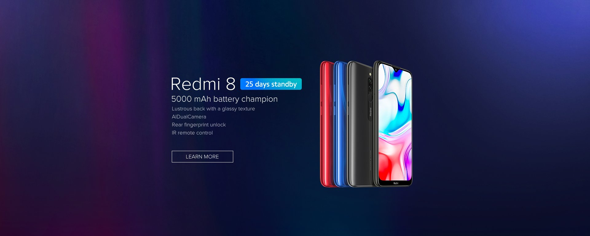

Xiaomi je službeno predstavio svoj neobični model smartfona Mi Mix Alpha, koji ima zaslon oko cijelog uređaja, znači sprijeda, straga i na rubovima. Zaslon je proizvela tvrtka Visionox. Xiaomijev CEO Lei Jun otkrio je kako je tisuću inženjera radilo na Alphi zadnje dvije godine, što je tvrtku koštalo 70 milijuna dolara.
Ovo nije prvi put da Xiaomi i Visionox surađuju. Tvrtka je radila zaslon za Xiaomijev preklopni prototip smartfona, s dvostrukim preklopom. Xiaomi je navodno poslao svoje inženjere da pomognu Visionoxu u izradi OLED zaslona za Alphu. Mi Mix Alpha košta 2 815 dolara, što je vrlo visoka cijena, no s vremenom, kada se poveća proizvodnja zaslona, cijena će pasti. Postojeći Mi Mix Alpha uređaji su prototipovi koji imaju plastiku umjesto stakla,
no Lin Bin je rekao kako će prodajni uređaji imati staklo. Xiaomi Mi Mix Alpha kreće u prodaju u prosincu.
U izvješću tvrtke Strategy Analytics, koje se bavi
tržištem smartphonea,
u prvom kvartalu ove godine vidljiv je podatak da je Xiaomi postao
četvrti najveći proizvođač smartphonea u svijetuSvi vi koji tražite čisti Android upakiran u posve solidan hardver, Xiaomi Mi A3 je telefon za vas.
Riječ je o lijepu i atraktivnu te za današnje pojmove, kompaktnu telefonu. Zaslon ima relativno tanak okvir,
a zubić na vrhu ne ometa previše. Kamere su za cjenovni rang posve pristojne, performanse vrlo dobre, a takva je i
autonomija.
U ruci ostavlja dojam znatno skupljeg telefona, a to potvrđuje i Gorilla Glass 5 s obje strane.
 S obzirom na izuzetnu popularnost Redmi Note 7 telefona prošle godine, ne čudi ovako velik interes za njegovim nasljednikom.
Redmi Note 8 Pro iz ponude web trgovina po razumnoj cijeni obećava veliki zaslon,
gaming performanse, 64MP kameru i jaku bateriju.
S obzirom na izuzetnu popularnost Redmi Note 7 telefona prošle godine, ne čudi ovako velik interes za njegovim nasljednikom.
Redmi Note 8 Pro iz ponude web trgovina po razumnoj cijeni obećava veliki zaslon,
gaming performanse, 64MP kameru i jaku bateriju.
 Mi 9 Lite oduševit će vas odličnim zaslonom,
vrlo dobrim performansama, jakom baterijom, a bogme i atraktivnim dizajnom te cijenom od oko 2100kn
Mi 9 Lite oduševit će vas odličnim zaslonom,
vrlo dobrim performansama, jakom baterijom, a bogme i atraktivnim dizajnom te cijenom od oko 2100kn

Redmi 8 recenzija: premium dizajn, moćna baterija i primamljiva cijena,
Redmi 8 pravi dva koraka naprijed i jedan korak unatrag. Iako su dizajn i vijek trajanja baterije fantastični,
kamera je srednje kvalitete.Redmi 8 pokreće snapdragon 632 te 4 gige rama.